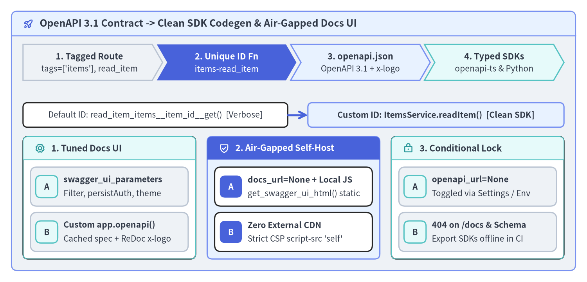

Webhooks・Callbacks・SDK 生成・Docs UI
FastAPI v0.162.2 はルート定義と型アノテーションから OpenAPI 3.1.0 および JSON Schema 2020-12 を直接合成するため、同一の Pydantic モデル群をアウトバウンド通知契約（app.webhooks と callbacks）、TypeScript / Python クライアント SDK 自動生成（generate_unique_id_function）、そして閉域網対応の Swagger UI / ReDoc ポータルにそのまま活用できます。

1. OpenAPI 3.1 Webhooks とリクエスト連動 Callbacks の違い
非同期イベント連携ではクライアントとサーバーの立場が逆転し、自社のバックエンドから顧客側の HTTP サーバーへアウトバウンド POST リクエストを送信します。OpenAPI 3.1.0 はこの逆方向 HTTP 通信を 2 種類の仕様としてモデル化しており、FastAPI はその両方を標準サポートしています。
| 比較軸 | OpenAPI 3.1 Webhooks（@app.webhooks.post） |
OpenAPI Callbacks（callbacks=router.routes） |
|---|---|---|
| 発火トリガー | 事前リクエストを伴わないドメインイベント（定期課金更新、状態変化など） | 特定の受信リクエスト（POST /invoices 等）に対する非同期の後続通知 |
| 送信先 URL の決定方法 | 購読者が管理画面等で事前登録した Webhook エンドポイント | リクエストごとに動的に指定（"{$request.body#/callback_url}"） |
| OpenAPI 出力位置 | ルート直下の openapi["webhooks"][event_name] |
paths[path][method]["callbacks"][route_name] の内部 |
| 受信ルートのマウント | なし — 送信ペイロードと期待する 2xx 応答の仕様書のみを生成 |
コールバック側ルーターは なし（親の @app.post のみ受信公開） |
@app.webhooks と動的 callbacks の宣言パターン
FastAPI インスタンスが保持する app.webhooks はドキュメント生成専用の APIRouter です。@app.webhooks.post("subscription-updated") で関数を装飾すると、Pydantic ボディモデル、PEP 727 Doc() 説明文、応答スキーマが components.schemas と openapi["webhooks"] に出力されますが、自社サーバー上に受信ルートは一切公開されません（POST /subscription-updated は 404 となります）。
一方、特定 API 呼び出しに紐づくコールバックを記述する場合は、独立した APIRouter() を作成して OpenAPI ランタイム式 "{$request.body#/callback_url}" をパスに指定し、起点となるエンドポイントへ callbacks=callback_router.routes を渡します。
from typing import Annotated
from annotated_doc import Doc
from fastapi import APIRouter, FastAPI
from pydantic import BaseModel, ConfigDict, Field, HttpUrl
app = FastAPI(title="Billing & Events API", version="1.0.0")
class SubscriptionEvent(BaseModel):
model_config = ConfigDict(extra="forbid")
username: str
monthly_fee: float
plan_tier: str
class EventAck(BaseModel):
ok: bool = True
# 1. OpenAPI 3.1 Webhook: documented under openapi["webhooks"], zero inbound route
@app.webhooks.post("subscription-updated", status_code=200)
def subscription_updated(
body: Annotated[
SubscriptionEvent,
Doc("Outbound JSON event pushed by our billing worker to subscriber URLs."),
],
) -> EventAck:
return EventAck()
# 2. OpenAPI Callback: tied to inbound POST /invoices & caller's callback_url
class InvoiceRequest(BaseModel):
model_config = ConfigDict(extra="forbid")
invoice_id: str = Field(pattern=r"^inv_[0-9]+$")
amount_cents: int = Field(gt=0)
callback_url: HttpUrl
class InvoicePaymentResult(BaseModel):
invoice_id: str
paid: bool
invoices_callback_router = APIRouter()
@invoices_callback_router.post("{$request.body#/callback_url}", status_code=200)
def invoice_notification(body: InvoicePaymentResult) -> EventAck:
"""Callback fired to the caller-supplied `callback_url` once payment settles."""
return EventAck()
@app.post("/invoices", callbacks=invoices_callback_router.routes, status_code=201)
async def create_invoice(invoice: InvoiceRequest) -> dict[str, str]:
return {"invoice_id": invoice.invoice_id, "status": "queued"}
なお、自社の FastAPI サービスが外部 SaaS（Stripe や GitHub など）からの Webhook を 受信する側（通常の @app.post("/hooks/stripe")）となる場合は、依存関数内で生の await request.body() バイト列を取得し、タイムスタンプ付き HMAC-SHA256 署名を hmac.compare_digest() で定数時間検証してからビジネスロジックへ渡してください（詳細は 認証・OAuth2 スコープ認可・抽出器 を参照）。
2. generate_unique_id_function によるクリーンな SDK 自動生成
フロントエンド向けの @hey-api/openapi-ts や Python マイクロサービス向けの openapi-python-client といった SDK ジェネレータは、OpenAPI 各オペレーションの operationId からメソッド名を決定します。

FastAPI 既定の fastapi.utils.generate_unique_id はタグ未指定ルートの衝突を防ぐため「関数名 + パス + HTTP メソッド」（read_item_items__item_id__get）を連結しますが、そのままでは生成 SDK のメソッド名が冗長になります。FastAPI(...)（または APIRouter）に generate_unique_id_function を渡して {tag}-{function_name} 形式に統一することで、サービスクラス単位に整理された簡潔な SDK メソッド（ItemsService.readItem() 等）が得られます。
カスタム operationId・swagger_ui_parameters・app.openapi() 拡張
generate_unique_id_function に加え、Swagger UI の操作性を向上させる swagger_ui_parameters（内部の _html_safe_json により <script> インジェクションを防止しつつ埋め込み）や、ReDoc 向けベンダー拡張 info["x-logo"] を付与して app.openapi_schema にキャッシュする app.openapi オーバーライドを組み合わせることができます。
from fastapi import FastAPI
from fastapi.openapi.utils import get_openapi
from fastapi.routing import APIRoute
from pydantic import BaseModel
def custom_generate_unique_id(route: APIRoute) -> str:
if route.tags:
return f"{route.tags[0]}-{route.name}"
return route.name
app = FastAPI(
title="Inventory SDK API",
version="2.4.0",
generate_unique_id_function=custom_generate_unique_id,
swagger_ui_parameters={
"syntaxHighlight": {"theme": "obsidian"},
"docExpansion": "none",
"persistAuthorization": True,
"filter": True,
},
)
class ItemSummary(BaseModel):
id: str
name: str
@app.get("/items/{item_id}", tags=["items"])
async def read_item(item_id: str) -> ItemSummary:
return ItemSummary(id=item_id, name="Precision Sensor")
def custom_openapi() -> dict[str, object]:
if app.openapi_schema:
return app.openapi_schema
openapi_schema = get_openapi(
title=app.title,
version=app.version,
summary="Type-safe OpenAPI 3.1 schema optimized for SDK codegen",
routes=app.routes,
)
openapi_schema["info"]["x-logo"] = {
"url": "https://fastapi.tiangolo.com/img/logo-margin/logo-teal.png",
"altText": "Inventory SDK API Logo",
}
app.openapi_schema = openapi_schema
return app.openapi_schema
app.openapi = custom_openapi # type: ignore[method-assign]
また、FastAPI v0.162.2 は既定で separate_input_output_schemas=True が有効になっているため（レスポンス直列化と OpenAPI 3.1 参照）、デフォルト値を持つフィールドが存在する場合は自動的に Model-Input と Model-Output が分離出力され、生成されたフロントエンド SDK で「送信時は省略可能・受信時は必須」という正確な型定義が保証されます。
3. 条件付き OpenAPI 無効化と閉域網（エアギャップ）Docs UI 自己配信
本番ロックダウン環境での OpenAPI 無効化（openapi_url=None）
外部公開や対話型ドキュメント露出を禁止する高セキュリティ環境では、pydantic-settings（pydantic-settings 設定管理と SQL DB 参照）の環境変数に応じて openapi_url=None を渡します。openapi_url=None 設定時は /openapi.json・/docs・/docs/oauth2-redirect・/redoc の全ルート登録がスキップされる一方、CI パイプライン内からは Python 上で app.openapi() を直接呼び出して SDK 生成用スキーマを抽出できます。
Swagger UI / ReDoc アセットのローカル自己配信（CDN 依存排除）
既定の /docs と /redoc は cdn.jsdelivr.net や fonts.googleapis.com から JS・CSS・Web フォントを読み込みます。インターネット遮断された閉域網（エアギャップ環境）や厳格な CSP（Content-Security-Policy: default-src 'self'; script-src 'self'）を強制する環境では、docs_url=None, redoc_url=None で標準 CDN ルートを無効化した上で /static にバンドルを同梱し、get_swagger_ui_html()・get_swagger_ui_oauth2_redirect_html()・get_redoc_html(..., with_google_fonts=False) でローカル配信ルートを構成します。
from pathlib import Path
from fastapi import FastAPI
from fastapi.openapi.docs import (
get_redoc_html,
get_swagger_ui_html,
get_swagger_ui_oauth2_redirect_html,
)
from fastapi.responses import HTMLResponse
from fastapi.staticfiles import StaticFiles
def create_airgapped_docs_app(static_dir: Path, locked_prod: bool = False) -> FastAPI:
if locked_prod:
return FastAPI(title="Internal Vault API", openapi_url=None)
app = FastAPI(
title="Air-Gapped Control Plane",
docs_url=None,
redoc_url=None,
)
app.mount("/static", StaticFiles(directory=static_dir), name="static")
@app.get("/docs", include_in_schema=False)
async def custom_swagger_ui_html() -> HTMLResponse:
assert app.openapi_url is not None
return get_swagger_ui_html(
openapi_url=app.openapi_url,
title=f"{app.title} - Swagger UI",
oauth2_redirect_url=app.swagger_ui_oauth2_redirect_url,
swagger_js_url="/static/swagger-ui-bundle.js",
swagger_css_url="/static/swagger-ui.css",
swagger_favicon_url="/static/favicon.png",
)
assert app.swagger_ui_oauth2_redirect_url is not None
@app.get(app.swagger_ui_oauth2_redirect_url, include_in_schema=False)
async def swagger_ui_redirect() -> HTMLResponse:
return get_swagger_ui_oauth2_redirect_html()
@app.get("/redoc", include_in_schema=False)
async def redoc_html() -> HTMLResponse:
assert app.openapi_url is not None
return get_redoc_html(
openapi_url=app.openapi_url,
title=f"{app.title} - ReDoc",
redoc_js_url="/static/redoc.standalone.js",
redoc_favicon_url="/static/favicon.png",
with_google_fonts=False,
)
return app
本章前半のフロントエンド統合パターン SPA frontend()・静的配信・マウント統合 とあわせ、続く 第 8 章: pydantic-settings 設定管理と SQL DB では型安全な環境設定管理とデータベースセッション運用を解説します。